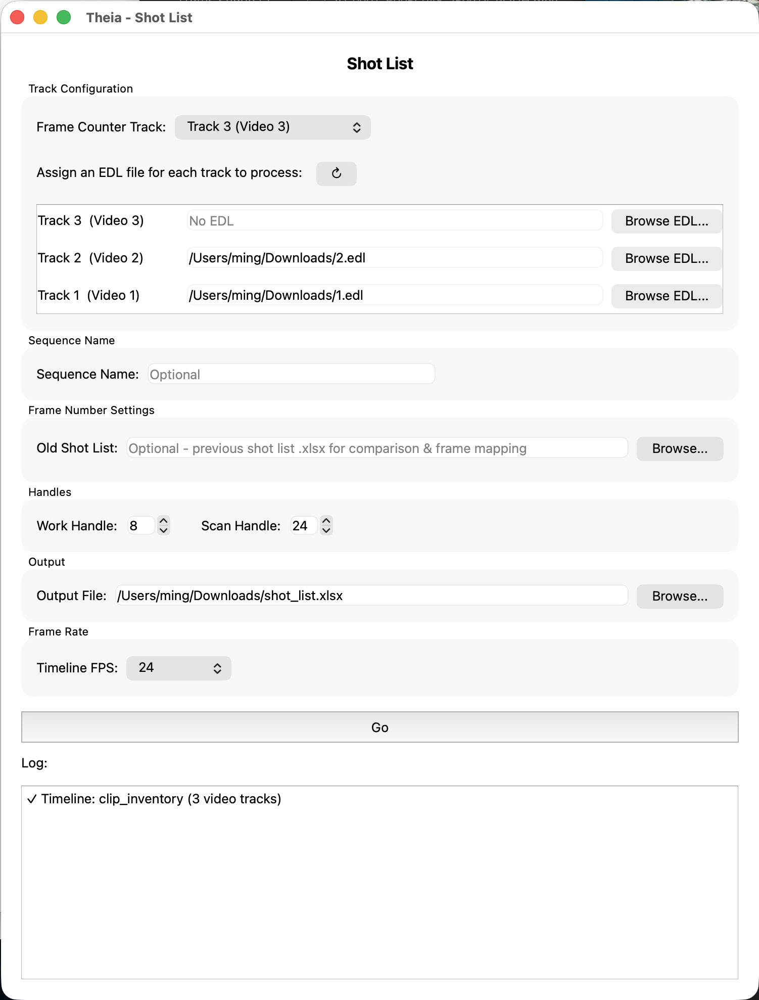

Shot List¶
Builds a structured, two-sheet shot list from your timeline — frame ranges, work/scan handles, retime and reposition flags, and (if you provide a previous version) a frame-accurate diff against the last cut. This is the tool VFX coordinators use to turn an edit into something a vendor or bidding sheet can actually consume.
Depends on Add Metadata's frame counter track
Shot List reads its shot boundaries and shot codes from a frame counter track that Add Metadata places on the timeline — it doesn't read the spreadsheet directly. Run Clip Inventory → fill in shot codes → Add Metadata (with Frame Counter enabled) before opening this tool. See Export a Shot List for the full chain.
Launching it¶
Workspace → Scripts → Edit → 04 Shot List, with the timeline (already containing a frame counter track) open.

Interface reference¶
Track Configuration¶
- Frame Counter Track — the video track containing the named frame-counter clips that Add Metadata placed. Each clip's name is read as a shot code, and its position/length defines that shot's cut in/out. Required.
- Assign an EDL file for each track — every other track you want included gets its own EDL file, browsed in per-track rows below the Frame Counter Track dropdown. A track left blank (no EDL) is ignored entirely — it won't appear in the output.
- ↻ (refresh) — re-reads the track list from Resolve (use after opening a different timeline).
Track 1 is always the background element
Whichever track you assign an EDL to that has the lowest track number is treated as the shot's background plate — its reel name and source timecode become the shot's Editorial Name and Cut In TC on the Shots sheet, and it's labeled ScanBg on the Elements sheet. Every other EDL-assigned track is labeled ScanFg01, ScanFg02, and so on, based on its track number (Track 2 → ScanFg01, Track 3 → ScanFg02, etc., regardless of which tracks you actually picked). In practice: put your background plate on Track 1 and assign its EDL there, so the labeling lines up with what's actually background.
EDL events are matched by position, not by name or timecode
Shot List lines up each clip on a track (in left-to-right order, skipping Resolve's built-in transitions) with the same-position event in that track's assigned EDL. If the EDL was exported from a different cut than what's currently on the track — clips added, removed, or reordered — the metadata pulled for each element (reel name, retime, dissolve handles) will be misaligned. Re-export the EDL from the exact cut you're running Shot List against.
Sequence Name¶
Optional. If left blank, Shot List derives a sequence name from each shot code by splitting on the first _ or - (so SEQ010_0010 → SEQ010). Fill this in to force every shot to use one sequence name instead.
Frame Number Settings¶
- Old Shot List — optionally point this at a previous Shot List export (the
.xlsxthis same tool produced earlier). When set, Shot List matches shots by Shot Code and fills in aChange to Cutcolumn showing how each shot's in/out frames moved since that version.
Handles¶
- Work Handle — frames added before/after each shot's cut in/out to produce
Work In/Work Outon the Shots sheet. Defaults to 8. - Scan Handle — frames added before/after each element's in/out to produce
ScanIn/ScanOuton the Elements sheet. Defaults to 24.
These are independent: Work Handle describes how much extra timeline you want editorial to protect around the cut; Scan Handle describes how much extra plate you're asking the scanning/ingest side to pull around each element.
Output¶
Where the .xlsx file is saved. Defaults to ~/Downloads/shot_list.xlsx.
Frame Rate¶
Choose a preset (23.976, 24, 25, 30, 60) or Custom.... Shot List tries to auto-detect this from the open timeline when the window loads. This must match the timeline's actual rate — it's used to convert every timecode the EDLs and frame counter track reference.
Go¶
Validates that a frame rate, Frame Counter Track, and output path are set (and that the Old Shot List file, if given, actually exists), then processes every shot on the Frame Counter Track in timeline order.
What ends up in the spreadsheet¶
Shot List writes two sheets.
Shots — one row per frame-counter clip (i.e. one row per shot):
| Column | Contents |
|---|---|
| Sequence | Derived from the shot code, or the Sequence Name override. |
| Cut Order | Sequential position of the shot on the Frame Counter Track, 1-based. |
| Editorial Name | Reel name of the background (ScanBg) element. |
| Shot Code | The frame-counter clip's name. |
| Change to Cut | Only filled in if you supplied an Old Shot List — see below. |
| Work In / Work Out | Cut In/Out minus/plus the Work Handle. |
| Cut In / Cut Out | The shot's frame range, read from the frame counter's embedded timecode/burn-in numbers — these are the same numbers your vendor sees in the Frame Counter video, not raw timeline frame numbers. |
| Cut Duration | Cut Out - Cut In + 1. |
| Bg Retime / Fg Retime | An x flag (not a percentage) if the background, or any foreground element, has a retime applied. Check the Elements sheet's Retime Summary for the actual speed. |
| Cut In TC | Source timecode of the background element, taken from its EDL event. |
Elements — one row per element (background or foreground plate) per shot, sorted within each shot:
| Column | Contents |
|---|---|
| Sequence, Cut Order, Shot Code | Same as the matching row on the Shots sheet. |
| Editorial Name | This element's own reel name (from its EDL event, falling back to the Resolve clip name). |
| Element | ScanBg for the background track, ScanFg01, ScanFg02, etc. for foreground tracks. |
| Cut In / Cut Out | The parent shot's frame range (repeated on every element row for that shot). |
| Clip Duration (with dissolve before retime) | This element's own duration, including any dissolve-handle extension, before retime adjustment. |
| Clip In TC / Clip In Frames / Clip In / Clip Out / Clip Out Frames / Clip Out TC | The element's source in/out, in both timecode and frame-number form. |
| ScanIn / ScanOut | Clip In/Out minus/plus the Scan Handle — what to actually pull from the scan or source media. |
| Retime Summary | Empty if 100% speed. Otherwise either a percentage (e.g. 50%) for a single retimed segment, or a breakdown like 48 @ 24, 24 @ 48 if multiple different-speed segments were merged into one element. |
| Scale & Repo | Any non-default zoom/pan/tilt on the element, summarized as Scale: 110% and/or Repo: 0.05,-0.02. Blank if the element is untouched. |
The Change to Cut diff¶
When you supply an Old Shot List, Shot List matches shots between the old and new files by Shot Code and compares Cut In/Cut Out. For any shot whose range changed, Change to Cut is filled in as:
In: <delta>if only the in point moved,Out: <delta>if only the out point moved,In: <delta>, Out: <delta>if both moved,- left blank if the shot is unchanged, is new (no matching shot code in the old file), or the old file had no valid in/out for that shot code.
Deltas are signed frame counts (e.g. In: -12 means the shot now starts 12 frames earlier).
Tips¶
- Run Add Metadata's Frame Counter step again any time shot codes or cut points change on the timeline — Shot List always reflects whatever's currently placed on the Frame Counter Track.
- Keep a copy of each Shot List export before re-cutting — feeding the previous version back in as the Old Shot List is the easiest way to flag cut changes to vendors without manually diffing two spreadsheets.
- See Export a Shot List for the complete step-by-step, including how the Frame Counter Track gets created in the first place.